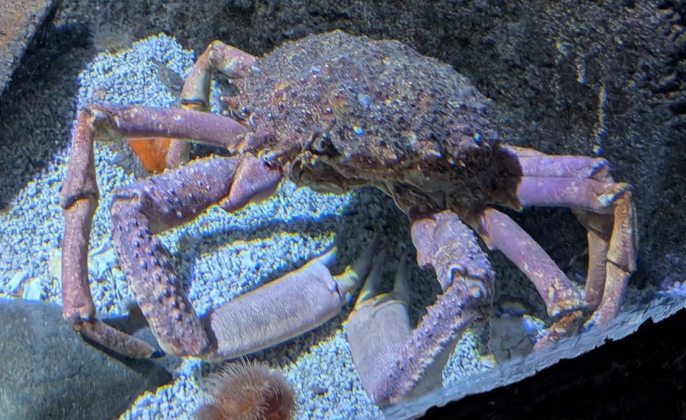

Araignée de mer Atlantique
Maja brachydactyla
L'araignée de mer est l'un des plus grands crabes d'Europe. Ses longues pattes et sa carapace couverte de petits crochets lui permettent de fixer des algues et des éponges pour se camoufler.
Informations scientifiques
| Nom scientifique | Maja brachydactyla |
|---|---|
| Nom commun | Araignée de mer Atlantique |
| Famille | Majidae |
| Ordre | Decapoda |
| Classe | Malacostraca |
| Habitat | Fonds rocheux, sableux et herbiers |
| Répartition | Atlantique Nord-Est et Manche |
| Profondeur | 0 à 150 m |
| Taille | Jusqu'à 25 cm de carapace |
| Alimentation | Omnivore |
| Espérance de vie | Entre 7 et 8 ans |
Description
L'araignée de mer effectue des migrations saisonnières entre les eaux profondes et les zones côtières où elle se reproduit.
Sa carapace possède de nombreuses épines sur lesquelles viennent s'accrocher des algues, des éponges ou des hydraires, rendant l'animal très difficile à repérer.
Très recherchée pour sa chair, cette espèce fait l'objet d'une importante pêche professionnelle sur les côtes françaises.